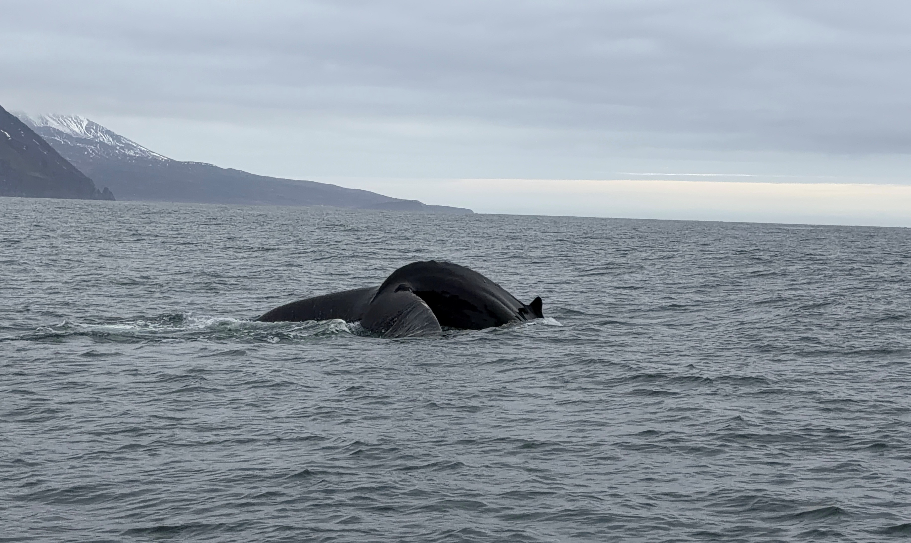
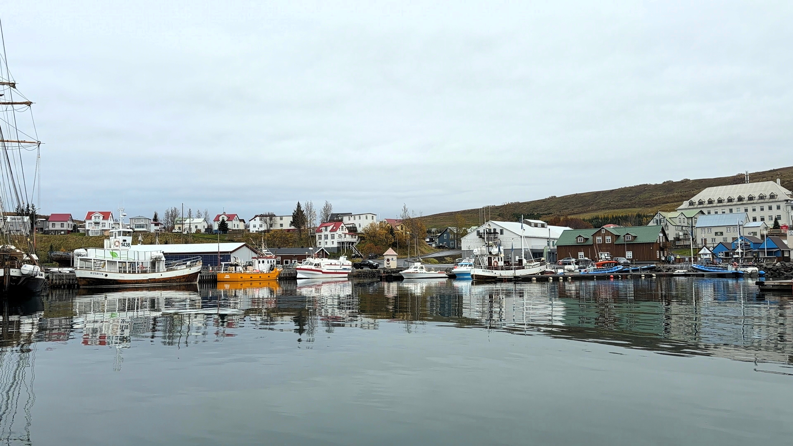
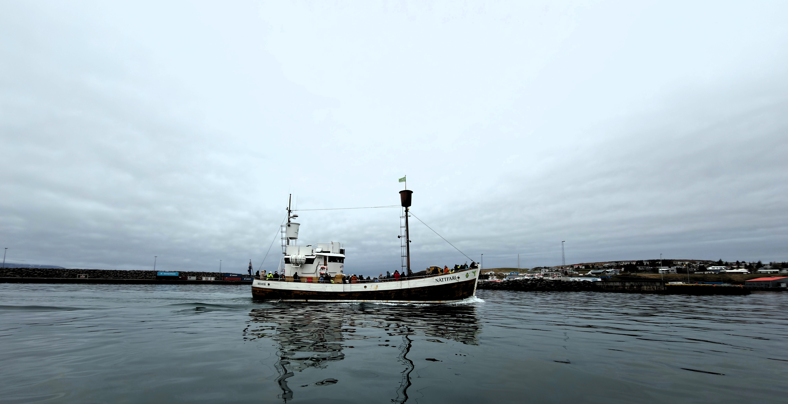
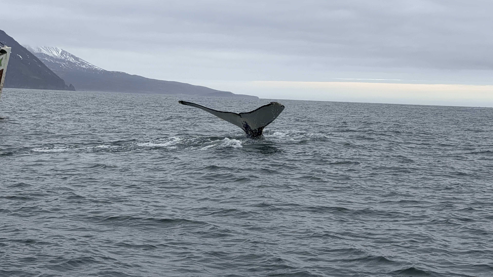

Giants of the North
HÚSAVÍK · NORTH ICELAND
Some experiences stay with you forever.
During my journey through Iceland, I found one of them in the small fishing town of Húsavík, often called the whale-watching capital of Europe. Located on the shores of Skjálfandi Bay in northern Iceland, this remote corner of the North Atlantic is one of the best places in the world to observe whales in their natural habitat.
Instead of choosing one of the larger tourist vessels, I joined a small RIB boat excursion. These boats are faster, more agile and capable of approaching wildlife from a respectful distance while offering a far more immersive experience. Sitting only a few metres above the water, every wave, every breath and every movement of the ocean feels amplified.
What followed became one of the most extraordinary wildlife encounters of my life.
Watching enormous humpback whales emerge from the dark waters of the North Atlantic only a few metres away is difficult to describe. Their size, power and grace create a mixture of excitement, respect and wonder unlike anything else in nature.
{kind=link}

Why Húsavík Is the Whale Capital of Iceland
Húsavík's reputation as one of the world's premier whale-watching destinations is no accident. The nutrient-rich waters of Skjálfandi Bay attract vast amounts of fish and krill, creating a feeding ground for numerous marine species.
{kind=link}

More than twenty species of whales and dolphins have been recorded in Icelandic waters. Humpback whales are among the most common visitors, but lucky observers may also encounter minke whales, white-beaked dolphins, harbour porpoises and even the mighty blue whale, the largest animal ever known to have existed on Earth.
Unlike many whale-watching destinations where sightings are uncertain, Húsavík offers an exceptionally high success rate during the summer months. It is one of the few places where wildlife encounters feel almost guaranteed while remaining completely natural and unpredictable.

Meeting the Giants
The greatest advantage of travelling by RIB boat is the sense of proximity.
While larger vessels provide comfort and stability, the smaller boats allow visitors to experience the scale of these animals from a much more intimate perspective. At times, the whales surfaced only a short distance away. Hearing the sound of a whale exhaling through its blowhole is something no photograph can truly capture.
Moments like this are impossible to forget. A humpback whale surfaced only a few metres from our boat, offering a brief but unforgettable glimpse into the life of one of the ocean's most magnificent creatures.
One moment the ocean appears calm and empty. The next, a dark shape emerges beneath the surface and an animal weighing tens of tonnes suddenly appears alongside the boat.
Despite their enormous size, humpback whales move with surprising elegance. Their movements seem effortless, almost gentle, as they rise to breathe before disappearing once again into the depths.
{kind=link}

The Life of a Humpback Whale
Humpback whales are among the most beloved marine mammals on the planet. Adults typically measure between 12 and 16 metres in length and can weigh up to 40 tonnes.
Their massive pectoral fins can reach five metres long, making them proportionally some of the longest fins in the animal kingdom. These giant fins help them manoeuvre with remarkable agility despite their immense size.
Each humpback whale possesses a unique tail pattern. Much like human fingerprints, no two tails are identical. Researchers often identify and track individual whales simply by photographing the underside of their flukes.
Many of the whales feeding around Iceland spend summers in the North Atlantic before undertaking extraordinary migrations towards warmer waters where they breed and give birth during winter.
{kind=link}

A 40-Ton Ocean Traveler
Humpback whales are among the greatest travellers on Earth.
Some individuals migrate more than 8,000 kilometres every year between feeding and breeding grounds. During these journeys they rely entirely on energy reserves accumulated during the summer feeding season.
Remarkably, humpback whales can spend months eating very little while migrating. The thick layer of blubber beneath their skin serves as both insulation and a vital energy reserve.
Even more impressive is the fact that newborn calves are capable of following their mothers across vast stretches of ocean before they are fully grown.
Motherhood in the Ocean
Whale mothers invest heavily in their young.
After a pregnancy lasting approximately eleven to twelve months, a humpback whale gives birth to a calf measuring around four to five metres in length and weighing close to one tonne.
To support such rapid growth, whale milk contains an astonishing amount of fat. Some estimates suggest it may contain more than 30 percent fat, making it far richer than cow's milk.
A calf can gain dozens of kilograms every single day during its first months of life.
During this period, the bond between mother and calf is incredibly strong. Mothers guide, protect and teach their offspring until they are capable of surviving independently.
The Songs of Giants
One of the most fascinating mysteries surrounding humpback whales is their songs.
Male humpbacks produce complex underwater vocalizations that can last for more than thirty minutes and be repeated for hours at a time.
These songs evolve continuously, with entire whale populations gradually changing melodies over the years. Scientists believe the songs are linked to communication and reproduction, although many questions remain unanswered.
To this day, humpback whale songs remain one of the most extraordinary acoustic phenomena in the natural world.
Curious Facts About Whales
Whales do not sleep in the same way humans do. Because they must consciously surface to breathe, only part of their brain rests at any given time while the other part remains active.
A whale's heart can be extraordinarily large. In the biggest species, the heart may weigh hundreds of kilograms and pump thousands of litres of blood throughout the body every day.
Blue whales are larger than any dinosaur known to have existed. Some individuals exceed 30 metres in length and can weigh more than 150 tonnes.
The blow visible above a whale is not water coming from its lungs. It is actually warm air mixed with water vapour that condenses when released into colder surroundings.
Whales play an important role in maintaining healthy marine ecosystems. Their feeding and movement help circulate nutrients throughout the ocean, benefiting countless other species.
Scientists have even discovered that whale populations contribute indirectly to carbon storage. By supporting marine food chains, whales help ecosystems remove carbon dioxide from the atmosphere.
Face to Face with Giants
Photography often encourages us to chase extraordinary landscapes. Mountains, waterfalls and dramatic coastlines are natural subjects for any travel photographer.
Yet sometimes the most unforgettable moments come not from places, but from encounters.
Standing in a small boat in the middle of the North Atlantic while a whale surfaces only a few metres away is one of those rare experiences that changes your perception of nature.
The ocean suddenly feels larger. The world feels older. And for a brief moment, you become aware of how small we truly are.
Among all the memories from Iceland, this encounter with the giants of the North remains one of the most powerful and unforgettable experiences of my life.
Related Stories
Continue exploring Iceland in -comes-alive.html">Where Earth Comes Alive, a photographic journey through volcanoes, waterfalls and the raw landscapes that make Iceland one of the most unique destinations on Earth.
Photo Notes
Location: Húsavík, North Iceland
Region: Skjálfandi Bay
Sea: North Atlantic Ocean
Species Observed: Humpback Whale
Category: Wildlife Photography
Activity: Whale Watching by RIB Boat
Subject: North Atlantic Whales
Photographer: Carles Torres